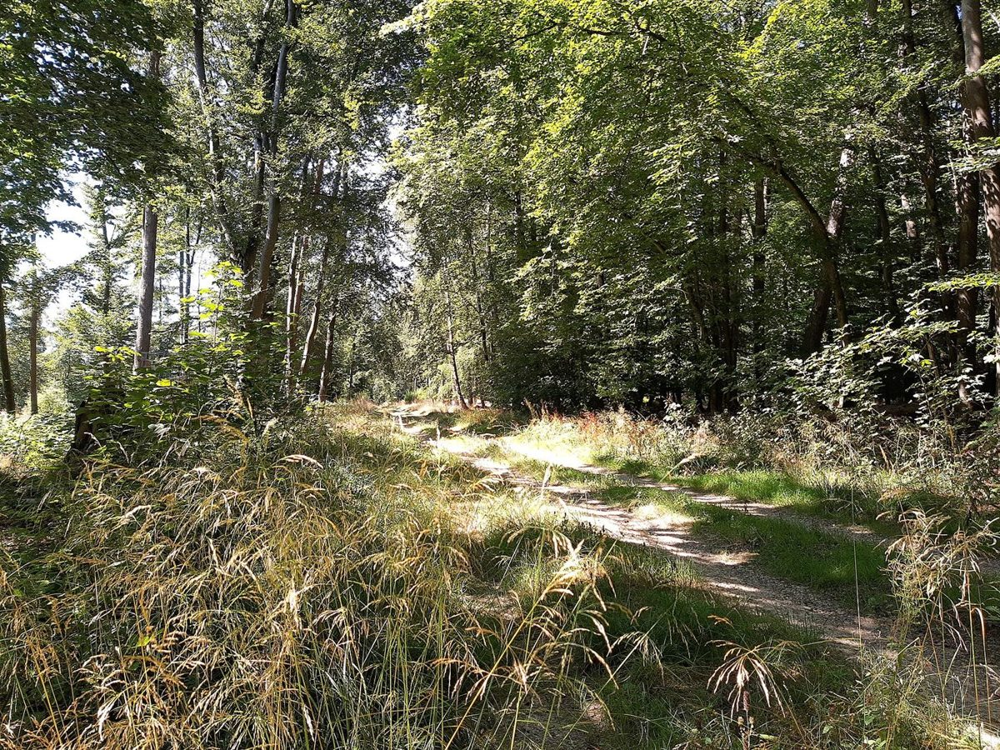

カフェ / 沖縄県糸満市
樹希
糸満市にあるカフェ「樹希」のご案内ページです。営業時間やメニューは準備中。確認できたのは所在地とInstagramだけなので、まずはそちらをのぞいてみてください。

制作側の連想
「ふりだし」から「あがり」までの、すごろく
この試作ページは、制作側が屋号の「樹」と「希」の字の見た目から連想して、すごろくの形にしました。「樹」から木立の写真、「希」から、いつかの一杯への期待を連想した遊びです。屋号の読み方や由来は分かりません。お店の理念・由来とは無関係の、制作側の連想です。
コース案内(写真はイメージ)
- ふりだし

国外のイメージ(ドイツ) 木立の小径から出発。
- 1マス

撮影地不明のイメージ 葉の水滴に立ち止まる。
- 2マス
一杯の湯気をひと休み。
- 3マス

国外のイメージ(イタリア) 窓の外をながめる。
- あがり

国外のイメージ(米国) 空の色を見てゴール。
写真は糸満市のものではなく、国外・撮影地不明のフリー素材です。マス目の中身はすべて制作側の遊びで、お店の様子ではありません。
ご案内
お店のこと(確認できたものだけ)
| 所在地 | 〒901-0364 沖縄県糸満市潮崎町3丁目9-10 |
|---|---|
| 電話 | なし |
| 営業時間 | 準備中 |
| 定休日 | 準備中 |
| ご予約 | 準備中 |
| 駐車場 | 準備中 |
| SNS | Instagram @bookcafe_kiki |